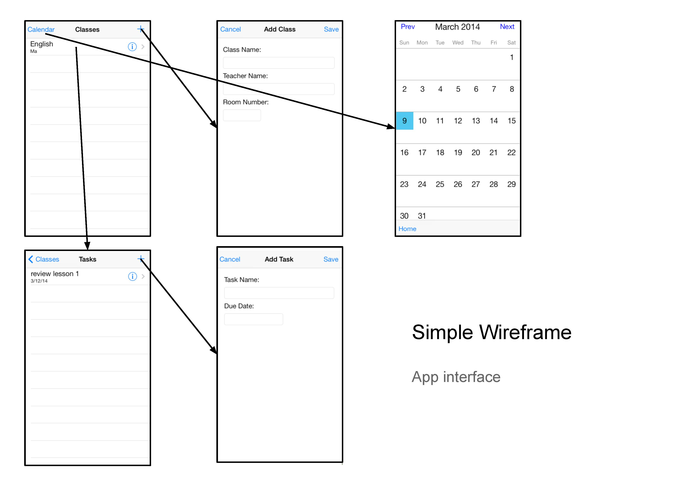
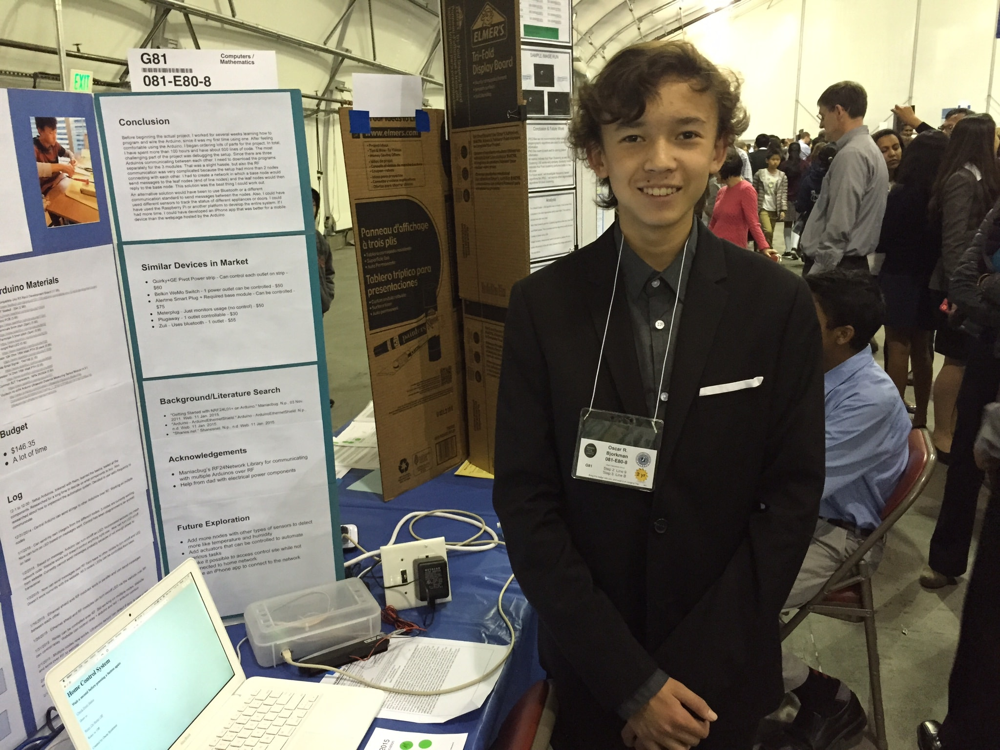
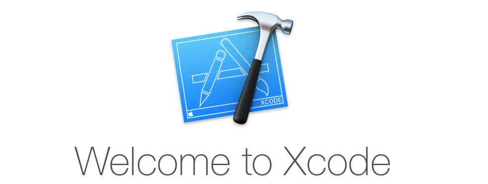
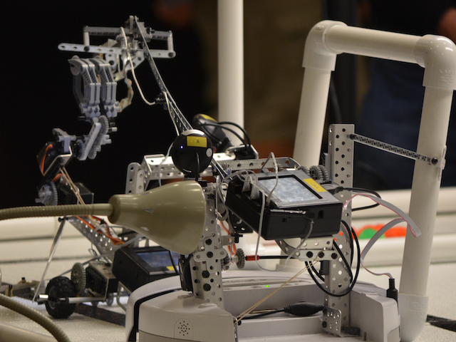

I am currently a 9th grader who loves to use the power of technology. I started doing iOS programming in 7th grade and did a Synopsys Science and Engineering Fair project using it. Near the end of 7th grade I bought a course that I was using to learn web development on Udemy. From that course, I learned a lot and created my own website.
Over the summer of 2015, I went to a iOS programming camp called Make School. Since then, I have published several apps on the Apple App Store. Other than programming, I play club soccer and tennis. At school, I relax with my friends and learn new things. I can read and write chinese decently since I take classes every Sunday.
My friend and I used a Lego Mindstorms robot to develop a small solar panel that would follow the sun. We wanted to see how much more efficient solar panels could be if they followed the sun rather than just standing in a static position. We found out that a moving solar panel was able to generate 4 times more electricity than a static solar panel.
Learned
This was my first science fair project so that was quite a milestone for me. I learned a lot about documenting my data with graphs and writing paragraphs about what I had done. This was also one of the first group projects that I had done which spanned over 2 months.
5th Grade
Overview
This year me and a friend did another team project and this time it had to do with my family's electric car. We wanted to figure out whether or the battery in our Nissan Leaf could be used to power the house. During the night, the car is charged at a very low rate. During the day, when the electricity costs are high, the battery can be used to power the house.
Learned
This project was a very theoretical project compared to the solar panel project, so there was a lot more math and calculations involved. I learned about documenting all the calculations in Excel and writing in words what I was calculating.
6th Grade
Overview
In 6th grade the science fair was mandatory for everyone as it was a part of the Science class curriculum. I did this one myself rather than with someone else. For this experiment, I wanted to calculate the cost of creating your own hydropower system to power your house. There would be a large tank on the roof that would store a large amount of water. During the night when electricity was cheaper, water would be pumped up to the tank. During the day, the water would fall down because of gravity and power a generator. The generator would generate electricity for the house. Excess electricity could be sold to the grid for some money.
Results
The cost of pumping the water onto the roof is 15 times more expenive than the electricity returned from the water falling down and powering a generator. As well as that, there is a $3000-$4000 dollar price tag for all of the equipment. The main electricity cost for the system is the pump. If it was more efficient, the system could be more feasible and actually help you save money.
Learned
While doing this project I learned a lot more about doing research and logging everything you do. This project took a lot longer than the other two projects because of the depth of this project and I worked by myself on this project.
Synopsys Championship 2013-2014

Overview
I started working on the project around December after taking a course in iOS 7 app development on Udemy. The project totally spanned over about 4 months, beginning in December and ending in March. My project was an iPhone application that could be used by students to track their homework in a todolist format. Each entry could be entered in with which class the work was from. When a task was completed, it could be checked off and removed from the list. The entries were stored using Core Data on the device. A calendar was also implemented on the device for the user to be able to track more long-term work. One of the goals of the project was to be able to sync the tasks with a database to which teachers added tasks. This wasn't completed because of time constraints. Even so, the project was a success and I even won a prize of $40!
Learned
From this project, I learned a lot more about iOS development and Objective-C. As well as learning programming, I learned about the development process of a more complete application. In the Udemy course, the applications were much smaller and didn't require as much planning. This application went through several iterations of designs and took over 100 hours to develop. This application at the beginning had tons of bugs and it took a very long time to fix most of them. As well as making the application, I learned a lot about making a successful project and marketing it on the poster board, which was on display at the faire. This was the first official science fair I had participated in so that was also a big jump from the small ones we had in elementary school.
Arduino Home Control

Overview
This is a project I did for the Synopsys Science and Technology Championship in 2014-2015. I used the Arduino platform to develop a home control system. There is a website that can be accessed in a web browser to turn on/off a relay which controls a power outlet, and to check the status of a door. The website is hosted on a central Arduino, which messages out to 2 leaf nodes with the sensor and the relay. When the user presses a button on the webpage, the base node detects that and sends a specific message to one of the nodes based on which button was pressed. The leaf node recieves the message and does its job. Then, it replies to the base node the status of a door or whether or not the relay is on or off. Finally, the website updates accordingly.
Learned
I learned how to use the Arduino, which includes its programming and hardware. I have never wired on a breadboard before because in the past I've always done software not hardware. This project was very fun because I built the hardware and the software so I could customize the system however I wanted.
Swift

Overview
I started learning Swift in 8th grade after taking an iOS 7 course using Objective-C in 7th grade. Swift has so far been very fun to learn not only because it is used to develop iPhone apps, but also the interesting compoents Swift has that other languages don't have. I have developed several iPhone applications, 2 of which are currently on the Apple Appstore.
In the summer of 8th grade, I went to an 8 week long camp called Make School. It was a summer long class where we would first learn Swift, then ship an app to Apple's App Store. The camp was very selective and I had to go through quite a long admissions process to get in. There was a very long form with all sorts of questions to be filled out, and then a interview with the founder of the camp. I got in and loved it. The camp was located at 3 different locations: San Fransisco, New York City, and Sunnyvale. I went to the Sunnyvale locaiton which was hosted at the Plug and Play Tech Center. That location was amazing because the building housed over 300 startups.
The first 3 weeks of the camp I learned Swift by cloning 2 applications that were already on the app store. Then for the next 5 weeks, I worked on my own application to be submitted to the app store. The camp culminated with a Demo Day where we showed our apps to companies and investors.
Botball

Overview
Botball is a very advanced robotics competition between teams composed of mostly high schoolers and some middle schoolers. It is slightly below the level of FRC - First Robotics Competition, since there is no cutting of pieces allowed, but it is very similar in the software department. I started doing Botball in 6th grade, even though it is a middle school competition. I had experience in FLL so it wasn't too big of a jump. The entire environment of Botball is different. In FLL, you usually form a team with a couple friends who also are interested in robotics, but in Botball, the teams are composed of people from 6th through 12th grade. Each team has a couple of senior people who are captain of the team, and then a mix of rookies and slightly more experienced people. The senior people lead the meetings and delegate tasks to the rest of the team to do. They try to teach the less experienced as well so when the rookies are seniors, they can pass on their knowledge to the next generation of rookies.
Robot Game
Each year, the robot game is released around January-Feburary. The robots compete on a table which is 8' by 8'. The maximum size of the robots usually is 15' by 15' by 15'. Sometimes, there are changes. The table usually has two sides divided with PVC pipe. In the middle, there is a gap where robots can drive through. There are two parts to the competition: Seeding and Double Elimination. Each round is 2 minutes long. In seeding, your robot(s) try to score as many points as possible in the given time. There is no opponent and you can use the scoring objects on both sides of the table to score. In Double Elimination, two teams are pitted against each other on the table. They try to score as many points as possible on their side, while possibly disrupting the other team's robot. Usually, a small robot is built to quickly get to the other side and randomly drive around to hopefully hit the other robot. Some teams have even knocked other robots off the table! Double elimination is usually the most exciting part of the competition.
Competiton
There are two competitions per season. In April, there is a regional competition between a bunch of other teams in the nearby area. Since there aren't that many teams partcipating (as of 2015 - but it is growing fast), every team advances to the next and final competition. This competition is called GCER, Global Conference for Educational Robotics. There are teams from all over the world at this competition. This competition has a lot more teams than the regional competition. Each year, the location of this competition changes. It has been in Hawaii and L.A. over the past couple years.
My Role
I am one of the main builders on the teams I have been on. I also help the programmers when they have issues and help them test their code on the robot. Over the years I have done Botball, I have learned a lot about building robust systems to accomplish a task.